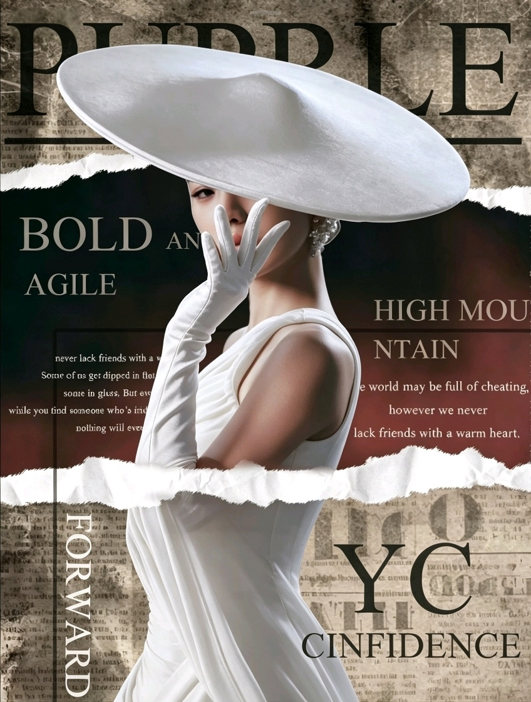
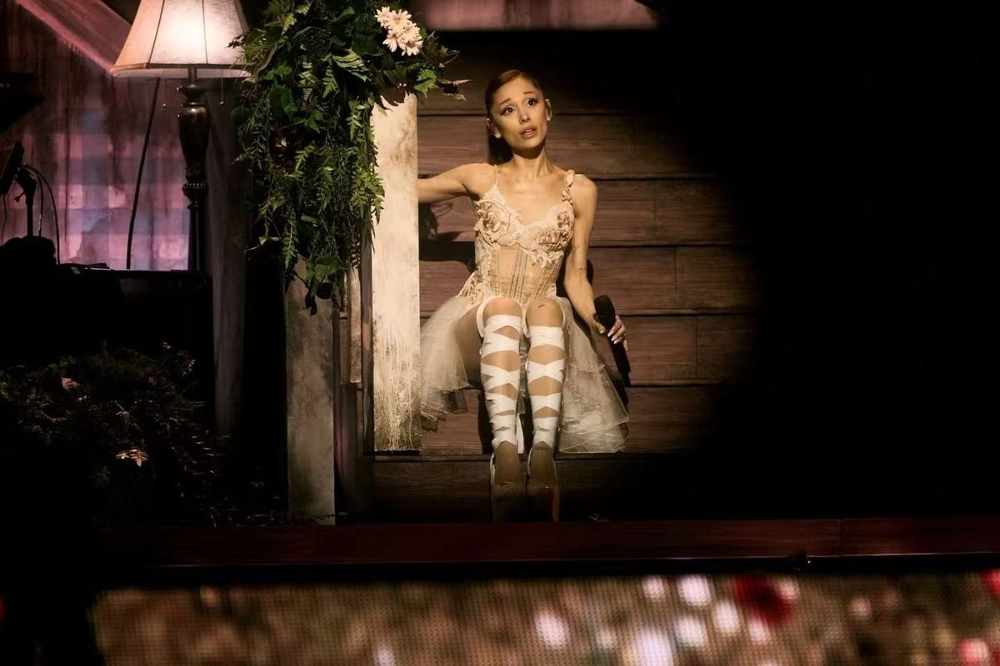
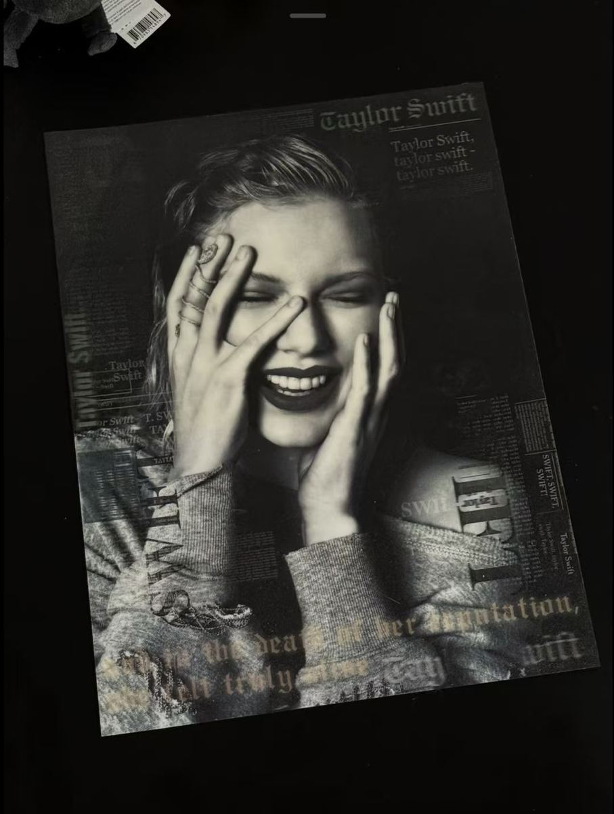
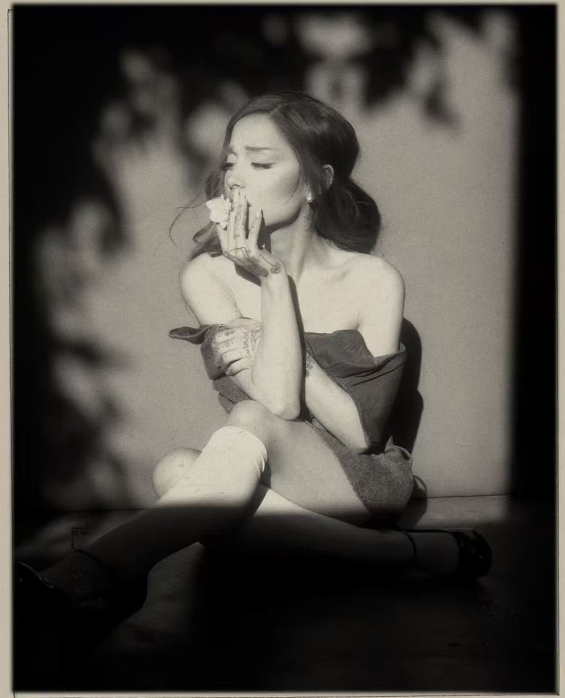
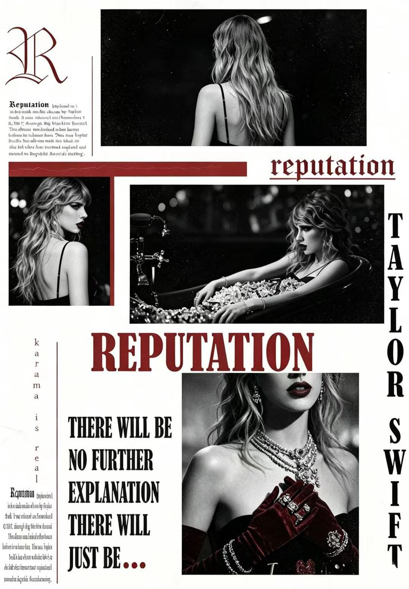

To 仲夏夜
给 张馨尹 的 20 岁生日礼物

关于 xhs 和 lxy 的事情
关于 xhs
啊啊啊这件事真的超级尴尬，我很怕你会觉得我每天都盯着你，但是我真的是在搜索浙江理工大学的时候不小心点到，惊慌失措想把号注销，又有点舍不得自己写的帖子，就想换一下头像企图蒙混过关🙃。
还有有的时候我发朋友圈，我怕你觉得是故意仅你可见的。其实我是仅一小部分人可见，在他们面前我有勇气做真实的自己。
关于 lxy 的事情
我一直记得你当时不太舒服，我很抱歉你因为这件事被人嘲笑。但是我觉得其中失去了一些上下文，会放大我做的不好的部分。不管怎样我是有做的不合适的地方，我之前已经向她道歉了，也希望能减轻一点对你的影响。
和其它人的事情想了很久还有什么，我思来想去只想到两个事情可能会引起误会。一个是互评签字确认学委放在宿舍楼里面，我让一位学姐帮我拿一下；另一个是我在食堂吃饭，一位学姐突然坐到我前面，用英语和我讲话，邀请我参加一个英语角活动。

关于我
我想自己不是一个太糟糕的人，为了自己的目的就不择手段，我只是习惯以目标倒推的思维方式，所以我做事时会明确自己想要的结果。但不意味着我只考虑自己的利益，我想我有很多无私的时候。
我是一位哥哥
我很爱我的弟弟，我从来没有对他大声说过话。在大一那年他刚上高中，几乎每一天我都倾听他的烦心事，陪伴他的成长。我没有想要得到什么，我只是希望他能有一个开心的少年时光，因为我自己那时候常常也不开心。
我是一位少年
刚上大学时，一位女生给我发一些让我不太舒服的话，我没有吐槽或者攻击她，只是找她室友说没有什么兴趣，让她不要发了。担心她自尊心受损，之前答应过和她出去玩，我还是信守了约定。
后来也证明是她室友的恶作剧。我当时只是觉得，她可能不知道怎么表达自己的情感，我不愿意去说什么来发泄自己的不满。我没有想为了什么，只是不希望对方受到伤害，更不应该用伤害去回应伤害。
关于我
我是一位男性
我在生活中也有很多不容易，但是从高中起就开始认真的思考女性主义。我知道在很多人眼里，一个男生说这些会被当成异类——在男性中是，在女性中有人觉得是在装，在父母眼中是太傻。但是我还是努力改变亲人朋友的观念。
在高考志愿填报时，我宁可不做这一单，也会劝说家长不要重男轻女，为了儿子放弃女儿，鼓励学生不要只停留在家庭，勇敢追求自己的梦想。也好在看到了一些效果。我没有什么企图，我只是看到了她们的困境，希望能改善哪怕一点点。
我是一位不太爱笑的人
平时也比较严肃。但是碰到那些辛苦的体力劳动者，我总会带着微笑说话，尽可能显得温柔。一次在教室自习，两位阿姨进来聊天了很久。我一直没有说什么，等到她们休息下来，才轻声说刚刚我在自习，声音可以稍微小一点。我看到她们眼中有点局促，和我道歉，所以我一直安慰她们工作辛苦了，闲聊了一会。我觉得她们年纪很大了很不容易，在其他人眼中可能地位卑微。我只是希望她们的生命中多一点善意，也多一些尊重。

关于我
我是一个有点焦虑的人
经常失眠，或者一头扎进信息里研究，期望找到一个最好的选择。
我在意自己的前途，也在意很多人，父母、亲人、朋友、爱人、不幸的人、辛苦的人。
有时候我看起来好像不在意别人，因为我常常分的太清，观点鲜明又与众不同。
但更多时候是因为我已经很疲惫了。
我是一个男生
却很大程度上有着女生的一些特质，在同性中常常让人觉得怪异，在异性中又被认为是刻意的、有所企图的。
I struggle, begging for kindness, but always fail. I got upset, but never truly lost hope.
也许我不是一个好男友，经常过于自负、偏执、固执、焦虑，说话语气生硬，很多时候让你伤心，所以才会让你产生这样的感受。
非常感谢过去的那些日子，你让我变成了一个更好的人，我在不断的反思中学会了尊重，包容和善良。但是真是抱歉呀，让你受了那么多的委屈。谢谢你在我的生命里出现过。

生日快乐！🎂
不絮絮叨叨了，祝你生日快乐呀，过了今天就 20 岁了，也是一个 2 岁的成年人啦。
希望你天天开心，生活被善意包裹，善良的人理应受到世界温柔的对待。希望你能更开心一点，幸福一点，早日实现自己的梦想！🍎🍎安安呀
对了，我还有一个小礼物，我不知道你是不是已经回温州了，那我应该寄给你嘛，要是你还在上海我就自己给你好了，我担心有点容易压坏。
按住鼠标向左拖拽 · 撕开